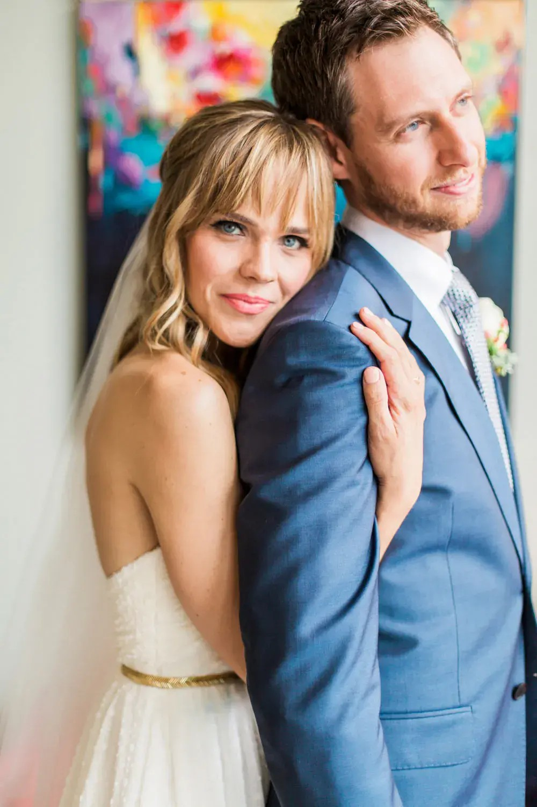
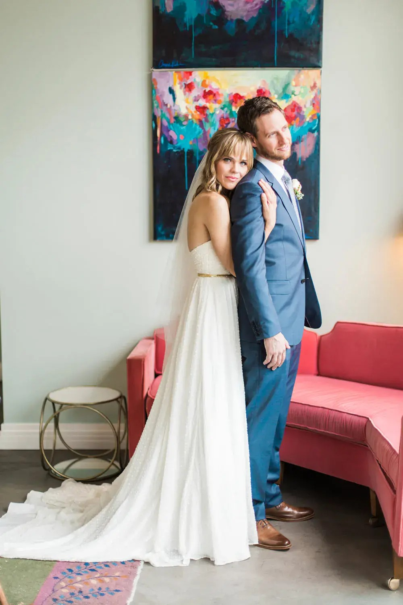
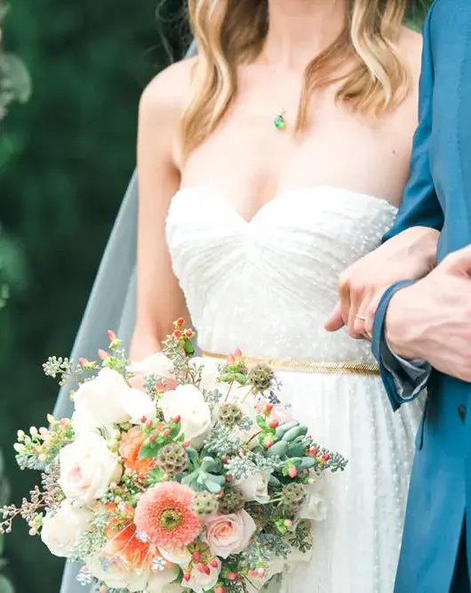
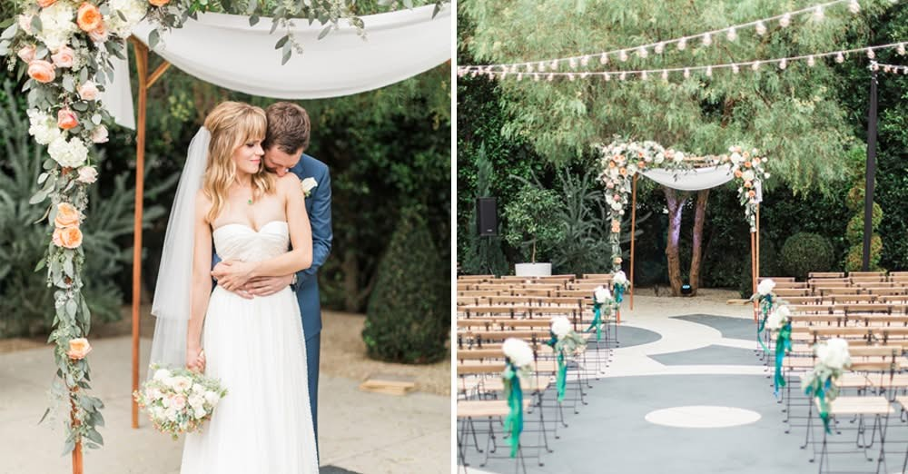

Weddings
London Wedding Photographer Los Angeles Wedding
5 January 2016
When I recently showed this gallery to a potential bride who was considering hiring me as her wedding photographer (and she did–hip hip hooray!), her initial response was “oh my goodness, these are real people”?. This pretty much sums up exactly how I felt while photographing this gorgeous couple’s wedding in Los Angeles. And not only are these two picture perfect–they happen to be one of the coolest, sweetest, kindest, funniest, most thoughtful and generous couples I know.
They chose the Fig House venue for it’s funky, colorful mid century modern feel and extended those elements throughout the wedding decor. The focus was on playful geometric patterns and a bold color palate of rich greens and blues offset by soft peach and touches of gold. The bride carried an elegant bouquet of white and peach roses and wore a beautiful emerald pendant necklace along with starburst earrings and gold sandals.
Many other personalized details tied in the couple’s cool-california style including games of bocce and badminton, a menu of delicious hot truck tacos and coolhaus icream sandwiches, and a getaway on their favorite mode of transportation–a motorcycle!
The bride and groom also undertook a number of DIY projects which added a charming and personalized element to the event–handmade table numbers and escort cards constructed using polaroids, gold”startbursts”, a signing frame created by the bride’s family and a chuppah and paper lantern display put together by the groomsmen!
Congratulations guys and thank you so much for letting me photograph your wedding day! Thanks so much to my fabulous second shooter Jennifer Lourie who did a great job and was a pleasure to have around! It was also wonderful working with the talented Laurie James who helped the couple plan and style their big day!
Please contact me if you are interested in learning more about my destination wedding photography or if you would like to hire me as your London wedding photographer! Although I am based in London I can be reached at 07462907790 or amy@fantonphotography.com and I look forward to discussing your wedding plans with you!



